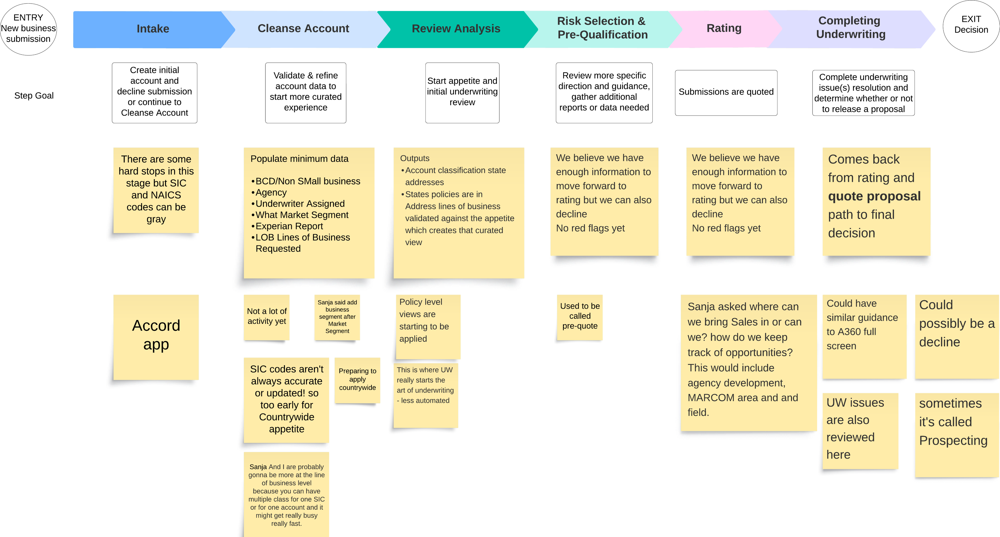
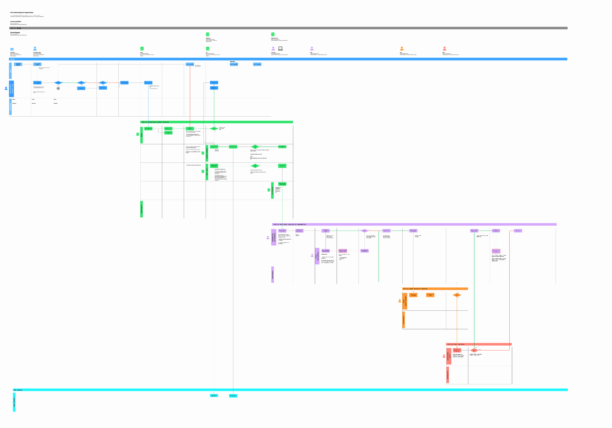
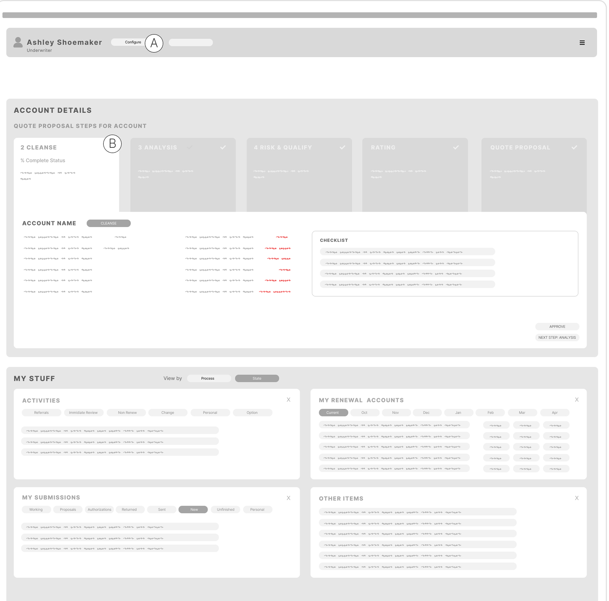
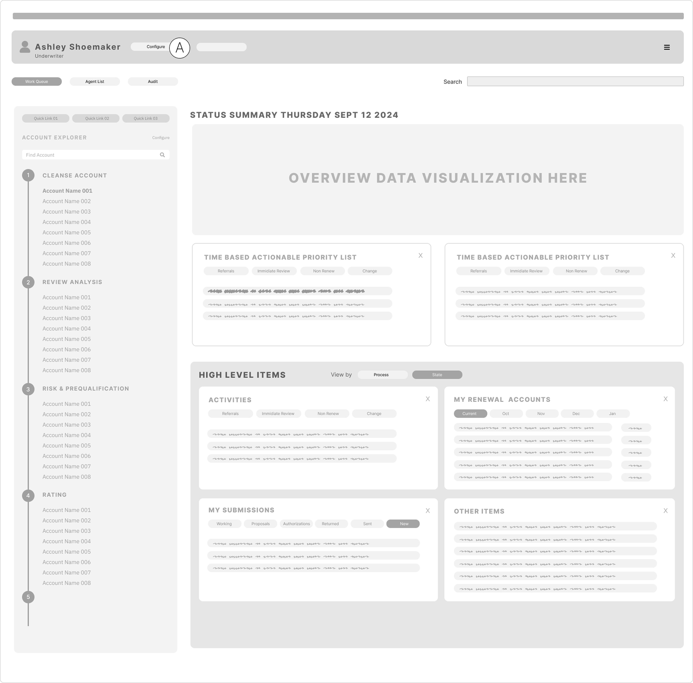
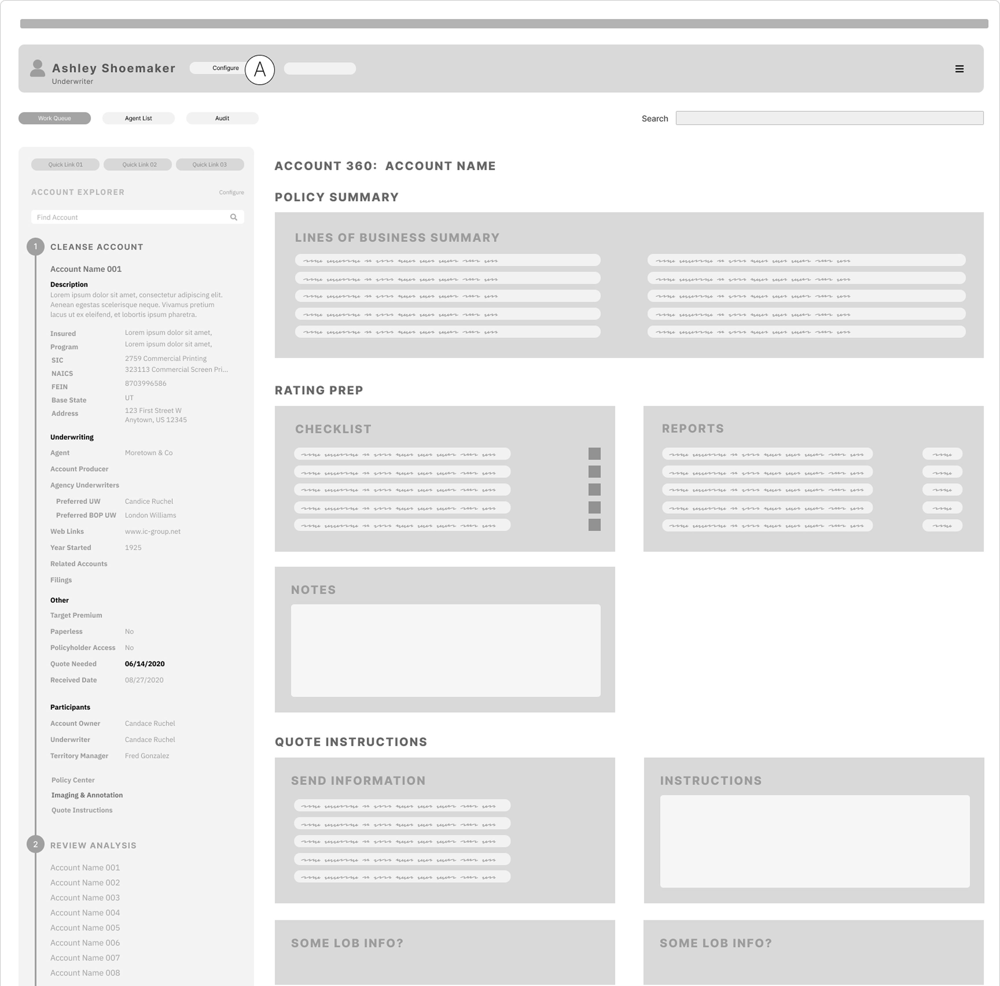
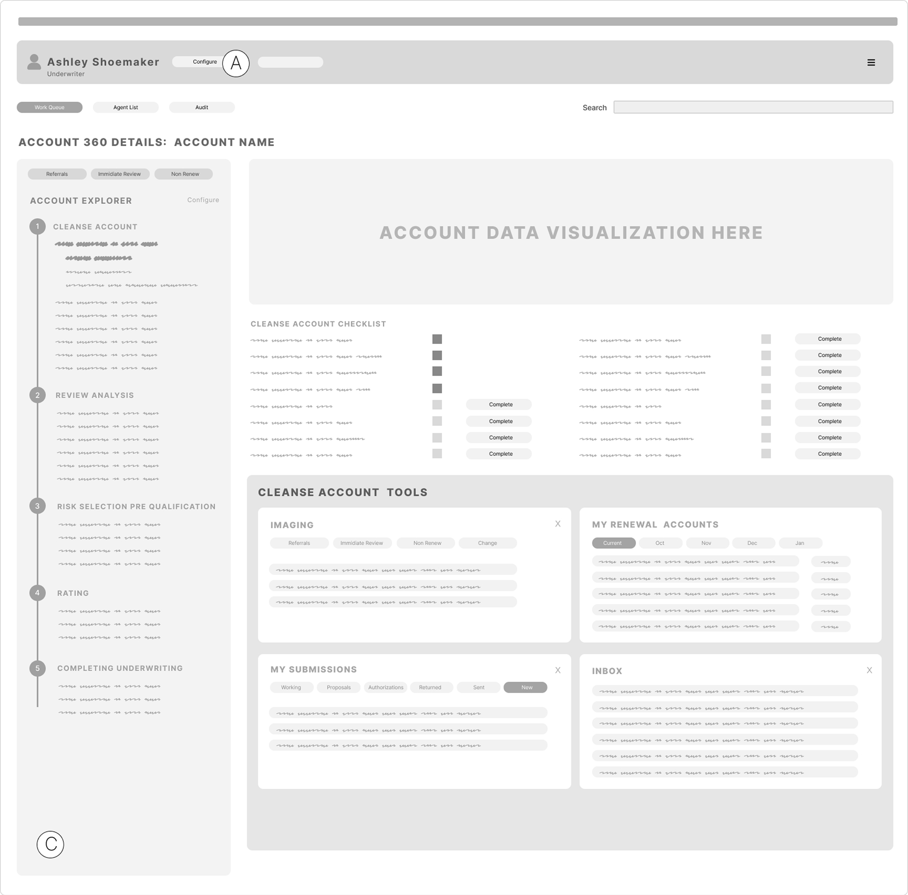

EMC Insurance
Converting an enterprise insurance underwriting platform, a mash-up of legacy designs, into a single modern business application built for stability, scalability, and clarity.

The final Underwriting Workbench, guiding underwriters step by step through a quote.
EMC's underwriting team was quoting business insurance on a tool that had grown into a mash-up of designs, stitched together over years, with no single source of truth for how a quote actually moved from intake to decision.
The opportunity was to convert that existing platform into a modern business application: one underwriting goal path, one visual system, built for stability and scale.
The EMC Underwriting Team had four goals for the redesign: reduce time to quote by at least 15%, increase profitability per quote by up to 15%, grow the volume of desirable new business within appetite, and reduce risk of account rejection by improving approval processes.
Every design decision after this point got weighed against those four goals directly, not against opinion or precedent.
Research started with qualitative brainstorming sessions with underwriting stakeholders, built into affinity maps in LucidChart, tagging every idea as essential, nice to have, or blue sky, then classifying it against the phase of the underwriting goal path it belonged to.
That process surfaced real performance gaps: hard stops with no clear next step, fields that were sometimes accurate and sometimes not, and entire process phases (like where Sales should plug into underwriting) that nobody had actually defined.

Affinity mapping the underwriting goal path, phase by phase, with the underwriting team.
The brainstorming and affinity mapping got synthesized into a single "happy path" process diagram in Figma, tracing how a quote actually moves through Policy Center, BPP, and Underwriting Central, the shared reference the whole team stayed aligned to.

The very large process map - definitely a birds eye view.
From there, I inventoried every existing application screen into a Figma site map, which exposed inconsistencies and wasteful goal paths the team hadn't seen laid out together before, then moved into goal-oriented workflow wireframes aligned to each step of that happy path.
The new experience was grounded in a "stepper" that guided underwriters through each phase of the goal journey, while keeping the data they needed for that decision available in a persistent left rail.




Engineering had already standardized on the Angular Material framework, so final designs used its existing, well-documented component set rather than a bespoke system, keeping delivery fast and consistent for the dev team.
A rebuilt Underwriting Workbench: a single account view carrying underwriters through cleanse, review analysis, risk selection, rating, and quote completion, with issues, activities, and decision data all in one place instead of scattered across the old mash-up of tools.


Time to quote dropped roughly 20%. Revenue per quote grew roughly 15%. New accounts grew the portfolio by roughly 25%. Account rejections fell roughly 20%.
I left the contract before final measurements were collected, so these are conservative estimates against the team's original targets, not audited numbers.
- Enterprise
- Systems Design
- Insurance